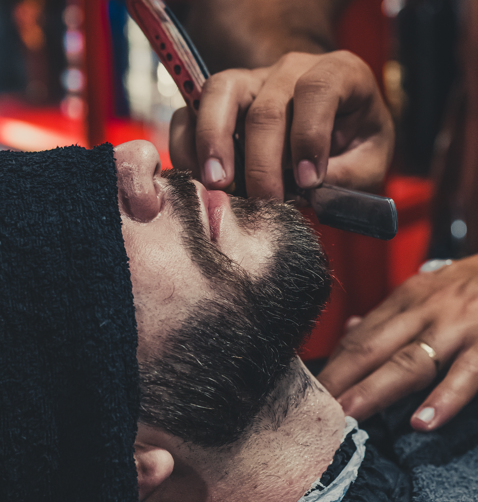

Disfarçado o famoso degradê, podendo ser baixo, médio ou alto, é um corte que combina com qualquer situação Saiba mais
Americano consiste na mesma ideia do degradê em áreas específicas, proporcionando crescer seu cabelo em novos formatos Saiba mais
Moicano desde a popularização de jogadores de futebol utlizando, virou febre e dispensa apresentações Saiba mais
 Barba conheça sobre nossos estilos e veja qual mais combina com seu rosto, corte e tamanho da barba Saiba mais